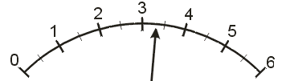
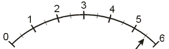
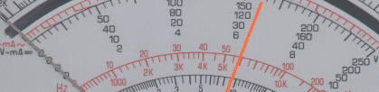

¿Se puede "hacer Física" u otra ciencia experimental sin medir?
Sí, los físicos teóricos no tienen que realizar medidas.
No.
Algunas veces sí.
¿A cuántas magnitudes fundamentales se pueden reducir todas las magnitudes de la Mecánica?
3
4
5
En la frase -Tardarás menos de 2 "-, ¿están expresadas correctamente las unidades?
Sí, es una expresión correcta
No es correcto. No se puede expresar el tiempo con unidades de ángulos. Segundos se escriben "s". (Todas las unidades se escriben sin punto al final, salvo que estén al final de una frase: min, s, m, etc.)
Es indiferente poner 2s ó 2 ".
El Sistema Internacional de Unidades (S.I.) se crea para.....
...evitar localismos y arbitrariedades y con un afán de transparencia e internacionalización consecuencia de la Revolución Francesa.
....desarrollar un deseo de la Royal Society.
..satisfacer un deseo de progreso y unidad de los distintos mini condados y reinos de la Europa pre-moderna.
¿Cómo se eliminan los errores sistemáticos?
Aumentando el número de medidas.
No pueden eliminarse.
Estudiando el proceso de medida y detectando donde se aplica mal, calibrando bien el aparato, etc.
Si al repetir las medidas obtenemos siempre el mismo valor ¿podemos afirmar que hemos realizado una medida precisa?
Sí, indica que ese instrumento es muy fiel y preciso y el método empleado muy bueno.
No, es una señal de medida tosca e instrumento poco sensible que mide en un rango muy aproximado.
Sí, cuanto menos discrepancias mejor y más sensible es el aparato.
¿Cuál es la imprecisión de esta cinta métrica?
1 centímetro.
1 metro.
1 milímetro.
¿Cuántas cifras significativas tiene el número 12,450, si las conocemos todas con certeza?
cuatro
dos
cinco
¿Cuántas cifras significativas tiene el número 4500 que conocemos con una imprecisión de 300?. Su expresión correcta será: 4500 ± 300
Cuatro
Dos
Ninguna
Suponiendo que se conocen con certeza las 5 primeras cifras decimales ¿cuál es la cifra menos significativa del número 0,03450?.
El 5
El último cero
El 3
Si conocemos con certeza todas las cfras del número 0,0750 ¿cuántas cifras significativas tiene?
Tres
Dos
Cuatro
¿Con cuántas cifras significativas debe darse la imprecisión cuando se escribe el resultado de una medida?
Todas las necesarias.
Más de una.
Sólo una.
Sólo una, salvo que la primera sea un 1 en cuyo caso pueden ponerse dos.
¿De qué manera las cifras significativas de la imprecisión condicionan la expresión de la medida?.
Haciendo que la cifra menos significativa de la medida sea del mismo orden que la cifra significativa de la imprecisión.
Haciendo que el valor medido sea de un orden menor que la imprecisión.
La imprecisión no afecta a la manera de expresar el resultado.

¿Cuál es la expresión correcta de la lectura ? Indicar si tiene mucha imprecisión
3,5 ± 0,5 Mucha imprecisión
3,3 ± 1 Poca imprecisión
3,3 ± 0,5 . Mucha imprecisión

¿Es menor la imprecisión de esta lectura que la del ejercicio anterior? ¿Y el error relativo?
La misma imprecisión y el mismo error relativo
La misma imprecisión y menor error relativo
mayor imprecisión y mayor error relativo
¿Cuál de estas expresiones es correcta ?
23,456 ± 0,341
23,000 ± 0,341
23,456 ± 0,001
23,450 ± 0,045
23,456 ± 0,01
Medimos una mesa de longitud un metro con una regla graduada en mm. Indica cuál de los siguientes resultados de la medida está expresado correctamente:
1,0 ± 0,001 m
1,00 ± 0,001 m
1,000 ± 0,001 m
1± 0,001 cm
Si la imprecisión de una serie de medidas es 150, ¿cuál de las siguientes expresiones es correcta?
12358 ± 150
12360 ± 150
12358 ± 100
¿Con cuántos decimales debo tomar el número "pi", si los datos del problema se dan con dos decimales?
Con un decimal es suficiente.
Con dos decimales.
Con todos los decimales que conozcas.
Si nos dan los datos de un problema (todos en el S.I.)con un decimal y tienes una buena calculadora ¿puedes dar los resultados con cinco decimales?
Sí, cuantos más mejor.
No porque las medidas no se conocen con precisión a partir de la primera cifra decimal.
Por lo menos con dos decimales.
La expresión en notación científica de 0,00000230 ± 0,00000001 es: (la letra E equivale a una base 10 y E - 8 equivale a 10 elevado a menos ocho)
230 E - 8
2,3 E - 6
2,30 E - 6
¿Cuál es el orden de magnitud de la siguiente expresión: 8 E 5 ?
E 5 (diez elevado a cinco, del orden de 100.000)
E 6 (del orden del millón)
de diez elevado a la ocho.

¿Qué sensibilidad tiene el polímetro de la figura en la escala de 250 V ?
1 V
2 V
5 V
¿Qué escala del polímetro usarías para medir un voltaje de 8 V ?
La escala de 250 V, para protejer el aparato.
La escala de 10 V.
La escala de 50 V.
Suponiendo que tienes seleccionada la escala de 50 V ¿qué medida lees?
6,2 ± 0,1 V
32 ± 1 V
130 ± 4 V
32,1 ± 1,0
Analiza esta afirmación: "Los instrumentos digitales muestran unos números en la pantalla que se corresponden con el valor exacto de la medida".
Cierto, las cifras que se ven son todas exactas.
Cierto, siempre que esté bien calibrado.
Falso, debemos situarlas en el rango de la imprecisión.
¿Cómo se puede evitar el error de paralaje?
Realizando varias medidas.
Colocándose en una posición correcta.
Cambiando de aparato.
No se puede evitar.
La calidad de la medida se manifiesta por .....
...un error absoluto pequeño.
...un error relativo pequeño.
..una expresión correcta con su grado de incertidumbre.
Cuál de las siguientes medidas: 1,23 ± 0,01 ; 300.000 ± 1 ; 45,0 ± 0,1 tiene más calidad ?
1,23 ± 0,01
45,0 ± 0,1
300.000 ± 1
Una medida de 10º realizada con un termómetro que mide décimas de grado tiene un error relativo de: